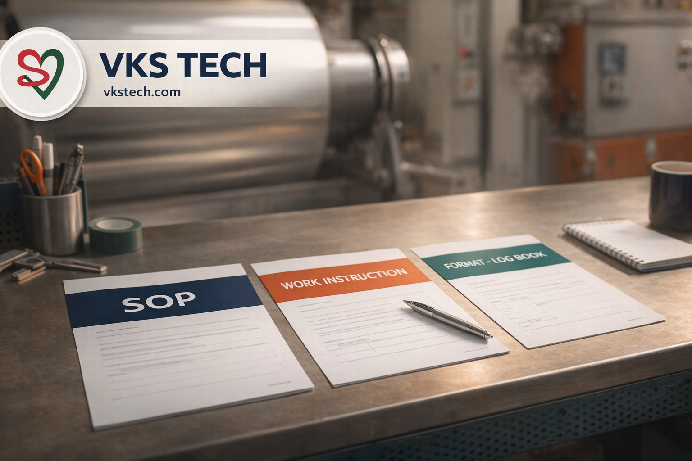
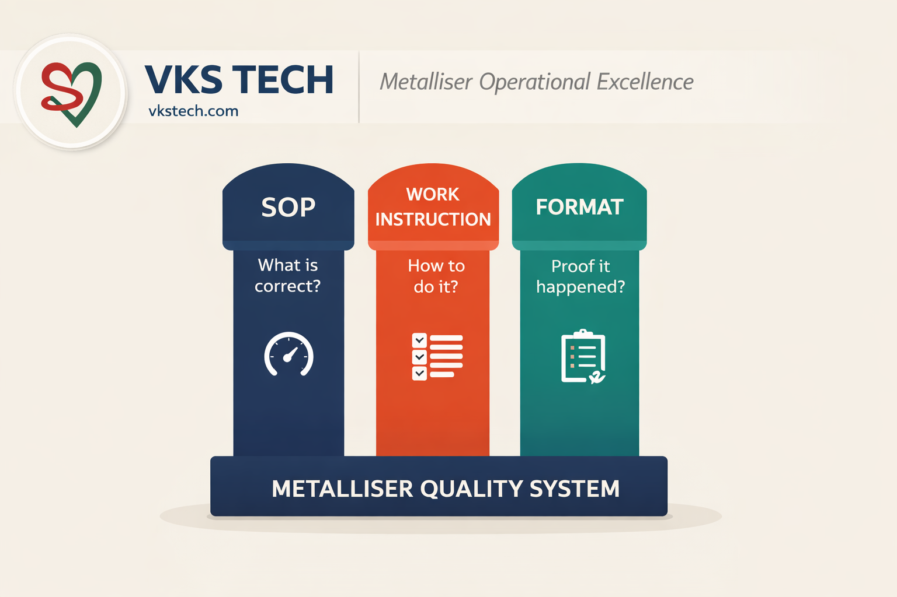
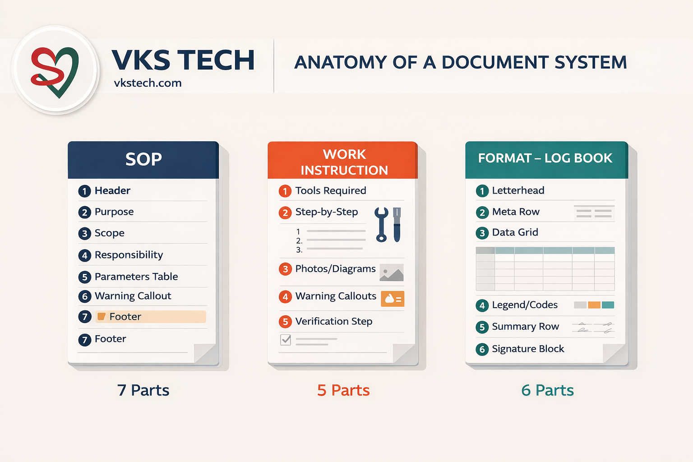
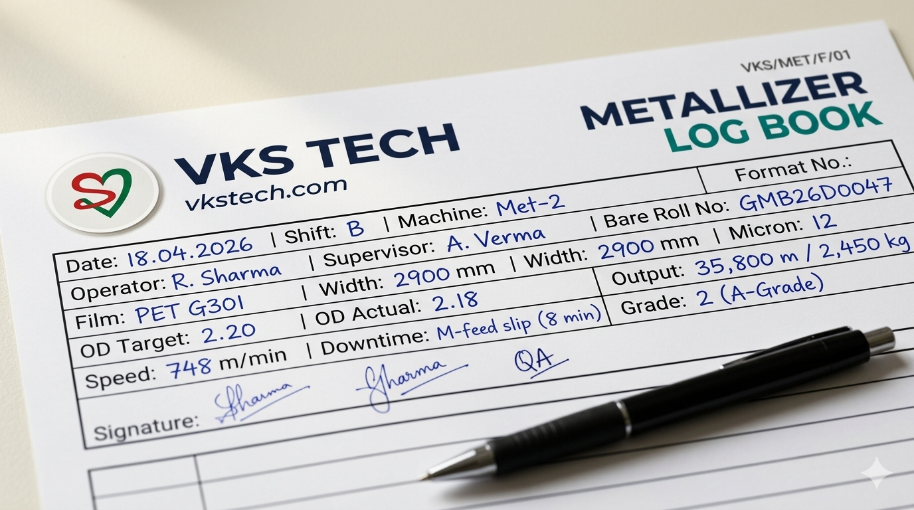
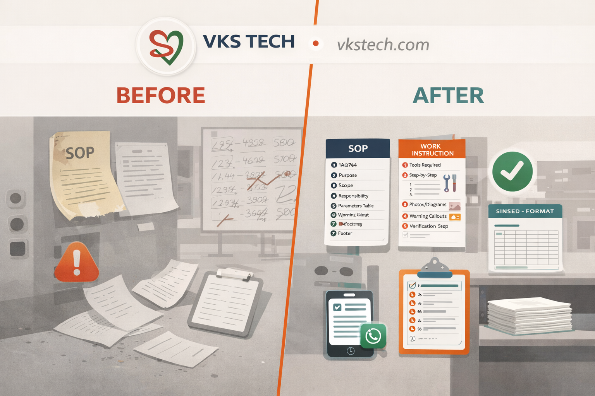
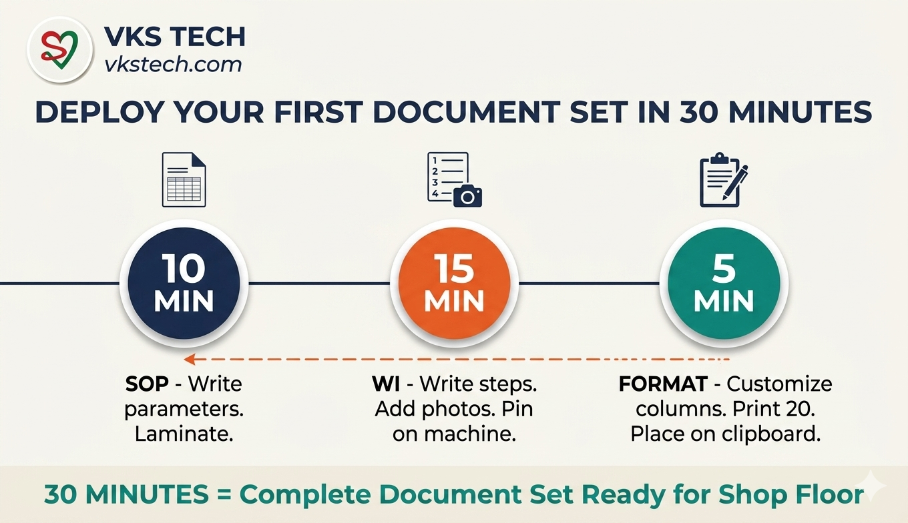
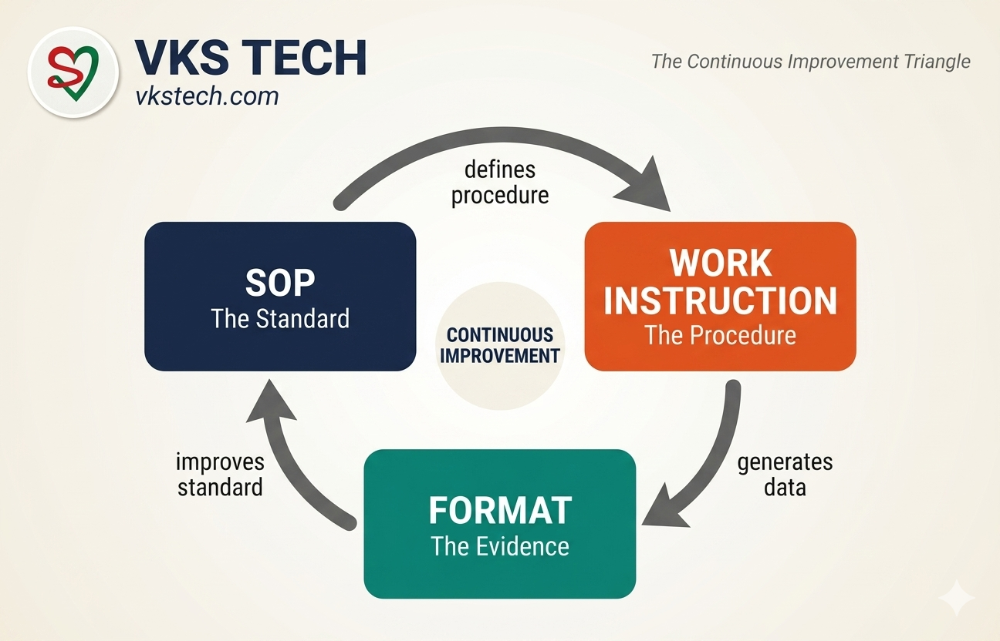
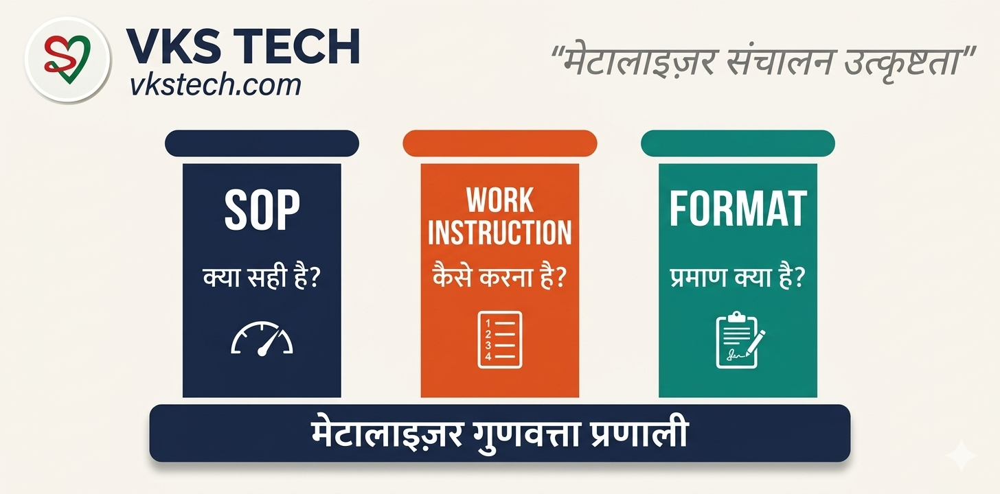
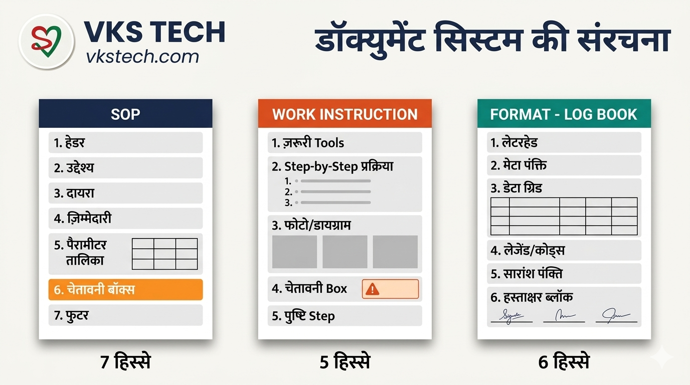
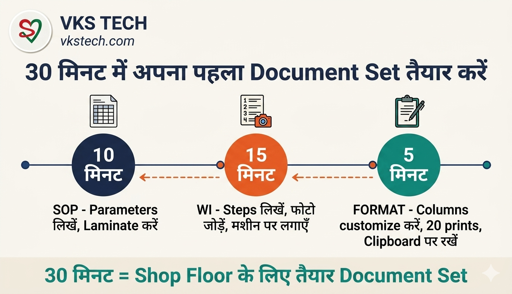

You've seen them everywhere on the shop floor — laminated sheets near the machine, binders in the supervisor's cabin, log books on the operator's table, PDFs on the shared drive. Some are titled "SOP", some say "Work Instruction", and some are "Formats" or "Records". Most operators treat them as the same thing. They're not. They're three different documents that do three different jobs — and confusing them is why audits fail, operators skip steps, and quality systems exist on paper but not in practice.
This guide breaks down the real difference between SOPs, Work Instructions, and Formats — when to use which, how each should be written, and — most importantly — gives you 56 free downloadable templates built specifically for metalliser and secondary slitter operations. Whether you're running BOBST K5, Applied Films, or any vacuum metalliser, this toolkit gives you a complete IMS document set you can adapt for your own plant in days.
Before you read further, be honest about your current plant. If any of these sound familiar, you're the reader this guide is written for:
Ticked 2 or more? Keep reading. This guide explains exactly what's broken, why it costs you lakhs every year, and gives you 56 free document templates + 3 interactive builders to fix it in 30 days.
| Document | What It Is | Real-World Analogy |
|---|---|---|
| SOP | A high-level document that defines WHAT to do, WHO is responsible, and WHAT the targets/limits are | Like a recipe card — it tells you the ingredients, quantities, and expected outcome, but not how to chop onions |
| Work Instruction (WI) | A detailed step-by-step guide that explains HOW to perform a specific task within an SOP | Like a cooking video — it shows you exactly how to hold the knife, what angle to cut, how long to stir |
| Format | A blank form that operators fill in during the shift — the proof that SOPs and WIs were actually followed | Like an attendance register — blank when printed, signed when used, audit-ready when filed |

| Aspect | SOP | Work Instruction | Format |
|---|---|---|---|
| Answers | WHAT, WHO, WHY | HOW (exactly) | DID IT HAPPEN? |
| Audience | Supervisors, auditors | Operators, technicians | Operators + verifiers |
| Detail Level | High-level overview | Step-by-step detail | Blank cells to fill |
| Length | 1-2 pages | 2-6 pages with photos | 1-2 pages landscape |
| Contains | Parameters, targets, tolerances | Numbered actions, photos, warnings | Pre-numbered rows, signature blocks |
| When Used | Training, audits, reference | Performing the task | During every shift |
| Update Frequency | Rarely (when standards change) | Often (when process improves) | Structure rarely; data every shift |
| Example | "OD 2.2 → run 2.09–2.31" | "Step 1: Open HMI → Step 2: Select recipe..." | Log book with date, OD, speed, remarks columns |
| ISO Requirement | Mandatory | Supports SOP, highly recommended | Mandatory — the audit evidence |
Each document type has a fixed structure. Not optional, not flexible — these are the parts that make the document audit-compliant and shop-floor-useful. Here's what each one must contain:
| # | 📘 SOP (7 parts) | 🔧 Work Instruction (5 parts) | 📋 Format (6 parts) |
|---|---|---|---|
| 1 | Header — logo, doc no, revision, effective date | Header + Tools — spares, PPE, anything needed before start | Letterhead — logo, format no, issue no, revision, effective date |
| 2 | Purpose — one line, why this exists | Step-by-Step — numbered verbs: "Open", "Check", "Tighten" | Meta Row — date, shift, machine, operator, supervisor |
| 3 | Scope — machines/departments covered | Photos / Diagrams — real visuals; operators identify by sight | Data Grid — pre-numbered rows, blank cells, units in headers |
| 4 | Responsibility — operator, supervisor, QC, engineer | Warning Callouts — orange/red boxes: "NEVER do X" | Legend / Codes — downtime codes P/M/E/O, grade codes |
| 5 | Parameters / Standards — values, targets, tolerances | Verification Step — how the operator confirms it was done right | Summary Row — totals, averages, shift KPIs |
| 6 | Critical Warnings — what goes wrong if ignored | — | Signature Block — operator + supervisor + HOD/QA |
| 7 | Footer — prepared by, approved by, page no | — | — |
The builders lower down in this page generate SOPs and WIs that follow these exact structures automatically. You fill the form, the document comes out correctly shaped. No need to memorise the 7+5+6 rules.

Most SOP/WI/Format training fails because people see blank templates and can't imagine how they get used. Here's a real row from F/01 Metallizer Log Book filled during one shift — this is what "proof" actually looks like on paper:
| Field | Entry | Why It Matters |
|---|---|---|
| Date / Shift | 18.04.2026 / B-Shift | Audit trail starts here — who was on duty |
| Machine | Met-2 | Traces defect to specific machine history |
| Operator / Supervisor | R. Sharma / A. Verma | Individual accountability, not team blame |
| Bare Roll No. | GMB26D0047 | Links to supplier batch if barrier fails at customer |
| Film / Width / Mic | PET G301 / 2900 mm / 12 μ | Confirms planning matched actual run |
| OD Target / Actual | 2.20 / 2.18 | Proves SOP-06 parameter band was held |
| Machine Speed | 748 m/min | Within SOP-03 target of 750 ±5% |
| Wire Feed Mode | AUTO | Confirms WI-02 setup was followed |
| Vacuum Time | 14 min | KPI — benchmarks pump health over time |
| Downtime | M — Wire feed slip (8 min) | Flags recurring issue for CAPA review |
| Output Length / Weight | 35,800 m / 2,450 kg | Matches SAP entry for billing reconciliation |
| Grade | 2 (A-Grade) | Drives dispatch decision — cannot be changed later |
| Signatures | R.S. / A.V. / QA-init | Three-tier accountability, no roll moves without all three |
Multiply this across 10 rolls per shift, 2 shifts per day, 30 days a month and you get a searchable history of everything your metalliser produced. When a customer calls three weeks later saying "Lot XYZ has pinholes", you pull the Format, read the row, and instantly see which boat cycle ran it, what the OD was, and whether downtime coincided. That's the real power of a Format — it turns your plant into a data system without spending one rupee on software.

Customer audit, 9:45 AM. The auditor was walking the metalliser floor with our Quality Manager. He stopped at the evaporation source section and asked the operator: "Show me the procedure for changing copper clamps." The operator pointed at a yellowed, laminated sheet on the wall — a 15-year-old SOP with faded text, no photos, and three steps that basically said "Remove old clamp. Clean surface. Install new clamp."
The auditor asked: "Which valve do you close first? How do you drain the water? What torque do you use on the bolts?" The operator knew every answer from 8 years of experience — but none of it was documented. The SOP was there for ISO compliance; the actual knowledge lived in the operator's head.
Then the auditor asked the killer question: "Show me the last 10 times this clamp change was done — when, by whom, and how long it took." Silence. There was no Format to record it. The SOP existed. The WI didn't. And nothing proved the work had ever happened.
The auditor marked it as a Major Non-Conformance: "Documented procedure does not reflect actual practice. Risk of knowledge loss if experienced operator leaves. No record of execution."
That night, we built all three — SOP with current parameters, a 7-step Work Instruction with photos of every valve and a SCADA screenshot, and a fillable Format to record each clamp change with date, operator, and total time. Same task, but now fully controlled. Any new operator could do it safely on day one, and any auditor could verify it was actually happening. That's the power of running SOP + WI + Format together.
Lesson: SOPs satisfy auditors. Work Instructions protect operators. Formats prove the work happened. You need all three — but if you have to choose where to invest time, write WIs for your critical tasks first, then build Formats to track them. The audit will pass. More importantly, your knowledge will survive the day your senior operator retires.
Quality Managers often say "we will do it next quarter when we have time". Here is the hidden price tag of "next quarter":
| Gap | What It Costs You | Typical Annual Hit |
|---|---|---|
| No Format to trace a rejection | One full jumbo returned = ~6,000 m of film + logistics + rework | ₹3–5 lakh per rejection event |
| No WI when senior operator quits | 3–6 months of training replacement; quality dips during handover | ₹8–12 lakh in lost A-Grade yield |
| Outdated SOP flagged by auditor | Major Non-Conformance = customer suspends dispatches pending CAPA | ₹10–50 lakh in frozen shipments |
| No PM checklist Format | Missed monthly maintenance → unplanned breakdown of diffusion pump | ₹15–25 lakh repair + 72 hours production loss |
| No GMP hygiene record | Food brand customer audit fails → delisted from approved supplier list | Entire account lost — often ₹2–10 crore annual revenue |
| No boat consumption Format | Unaccounted boat shrinkage (theft or waste) goes undetected for months | ₹50,000–2 lakh per year in silent leakage |
One prevented rejection pays for implementing this entire document system a hundred times over. The cost of doing nothing compounds every month you delay.

Don't overthink this. You don't need consultants, software licenses, or three months of planning. You need one SOP, one WI, one Format — for your single most critical task — deployed on the shop floor by end of today. That's where the discipline starts.
Here's the workflow:
Replicate for the next critical task. Within 90 days, you have 10–15 document sets covering the whole department. The builders and templates you need for all this are directly below. No email signup. No login. No credit card.

A document system is not three separate files — it's a single loop. Formats capture real shift data. That data reveals which WI steps are weak or missing. Improved WIs change how operators execute, which may force an SOP parameter update. The updated SOP changes the Format columns. The loop repeats every quarter, getting tighter each time. This is what "continuous improvement" actually looks like on a metalliser floor — not a slogan, but a flow of paper feeding data back into process.

Theory's over. Below are three working builders — fill the form, download a real Microsoft Word .docx file in 30 seconds. No email signup. No account. Your data, your logo, your photos stay inside your browser the whole time — nothing is uploaded to any server.
Click any section to expand it. Start with whichever you need first:
Pick the template that matches your need. Each is a professionally formatted blank Microsoft Word (.docx) file. Open in Word, replace [Your Company Name] with yours, customise column headers to match your process, and print. Ready in 5 minutes.
Need more Format types? The complete 17-Format library is in the downloads section below — covering PM checklists, blade records, GMP hygiene, and more.
Every document below follows the exact anatomy described above. Professional formatting, branded letterhead/footer, ready to adapt for your plant. 12 SOPs, 27 Work Instructions, 17 Formats — 56 documents total, all authored by a packaging industry veteran running a real metalliser line.
| Question | Answer |
|---|---|
| Can I use these for ISO 9001 / IMS / BRC / FSSC 22000 certification? | Yes. Every document follows the standard 7+5+6 anatomy required by ISO-aligned systems. Just replace "VKS TECH" with your company name, update the Effective Date to your first-issue date, and get HOD approval signatures. Your IMS auditor will find the structure familiar and compliant. |
| Do I have to use all 56 documents? That feels overwhelming. | No. Start with the 5 highest-risk processes in your plant — typically boat change, OD setting, roll wrapping, copper clamp replacement, and Al dust handling. Roll out the SOP + WI + Format set for each, one per week. You'll have the top 5 deployed in 5 weeks. The rest can follow over 2-3 months. |
| Can I edit the Word files, or are they locked? | Fully editable. They're standard .docx files — open in Microsoft Word, LibreOffice, or Google Docs. Replace logos, text, parameters and tables freely. The only thing to preserve is the overall anatomy (header, purpose, scope, parameters, warnings, footer) for ISO compliance. |
| Where do I start if my plant has nothing today? | Start with Formats — specifically F/01 (Metallizer Log Book) and F/07 (PM Daily Checklist). Blank records feel uncomfortable to supervisors, so they will start capturing data immediately. Within 2 weeks, the data itself will tell you which SOPs and WIs to write next. |
| I'm not in flexible packaging — can I still use these? | The document anatomy is universal. The content is metalliser-specific, but the structure (letterhead, meta row, data grid, legend, summary, signature block for Formats; purpose, scope, responsibility, parameters, warnings for SOPs) translates directly to pharma, food processing, automotive, or any manufacturing setup. Use these as structural templates and replace the process content. |
| Do I need to pay for updates? | No. Everything on vkstech.com is free forever. When I improve a document, the updated version replaces the old one in the same download link. You can check back quarterly or subscribe to be notified of new releases. |
| Can I share these with other plants or my supplier/customer? | Yes — please do. The goal is to raise the quality standard of the whole Indian flexible packaging industry, not lock knowledge behind paywalls. The only request: keep a credit line back to vkstech.com so others can find the source. |
| What if I find an error or have a suggestion? | Use the contact form on vkstech.com. Corrections and improvements from real plant users are what keeps these documents accurate. You'll be credited in the revision history. |
Shop floor पर ये हर जगह दिखते हैं — machine के पास laminated sheets, supervisor की cabin में binders, operator की table पर log books, shared drive पर PDFs। कुछ पर "SOP" लिखा है, कुछ पर "Work Instruction", और कुछ "Formats" या "Records" हैं। ज़्यादातर operators सबको एक ही चीज़ समझते हैं। ये एक नहीं हैं। ये तीन अलग documents हैं जो तीन अलग काम करते हैं — और इन्हें confuse करना ही वजह है कि audits fail होते हैं, operators steps skip करते हैं, और quality system कागज़ पर रहता है, practice में नहीं।
यह guide SOP, Work Instruction और Format का असली फ़र्क बताती है — कब कौनसा use करना है, हर एक कैसे लिखना चाहिए, और सबसे ज़रूरी — 56 free downloadable templates देती है जो specifically metalliser और secondary slitter operations के लिए बने हैं। चाहे आप BOBST K5 चला रहे हों, Applied Films, या कोई भी vacuum metalliser — यह toolkit आपको complete IMS document set देता है जिसे आप अपने plant के लिए days में adapt कर सकते हैं।
आगे पढ़ने से पहले अपने plant के बारे में honest रहो। अगर इनमें से कोई भी जाना-पहचाना लगे, तो यह guide आपके ही लिए लिखी गई है:
2 या ज़्यादा पर tick? पढ़ते रहो। यह guide exactly बताती है क्या ख़राब है, क्यों हर साल लाखों का नुकसान है, और देती है 56 मुफ़्त document templates + 3 interactive builders जो 30 दिनों में सब ठीक कर सकते हैं।
| Document | क्या है | Real-World उदाहरण |
|---|---|---|
| SOP | High-level document जो बताता है क्या करना है, कौन ज़िम्मेदार है, और targets/limits क्या हैं | जैसे recipe card — ingredients, quantities और expected result बताता है, पर प्याज़ कैसे काटना है ये नहीं |
| Work Instruction (WI) | Detailed step-by-step guide जो बताती है कि SOP के अंदर कोई specific task कैसे करना है | जैसे cooking video — exactly बताता है कि चाकू कैसे पकड़ना है, किस angle पर काटना है, कितनी देर चलाना है |
| Format | Blank form जिसे operator shift के दौरान भरता है — proof कि SOPs और WIs actually follow हुईं | जैसे attendance register — print के time blank, use के time signed, file में audit-ready |

| पहलू | SOP | Work Instruction | Format |
|---|---|---|---|
| जवाब देता है | क्या, कौन, क्यों | कैसे (exactly) | हुआ या नहीं? |
| पढ़ने वाला | Supervisors, auditors | Operators, technicians | Operators + verifiers |
| Detail Level | High-level overview | Step-by-step detail | भरने के लिए blank cells |
| लंबाई | 1-2 pages | 2-6 pages with photos | 1-2 pages landscape |
| अंदर क्या होता है | Parameters, targets, tolerances | Numbered actions, photos, warnings | Pre-numbered rows, signature blocks |
| कब use होता है | Training, audits, reference | Task perform करते समय | हर shift में |
| Update कब | कम (जब standards बदलें) | अक्सर (जब process improve हो) | Structure कम; data हर shift |
| उदाहरण | "OD 2.2 → run 2.09–2.31" | "Step 1: HMI खोलो → Step 2: Recipe select..." | Log book with date, OD, speed, remarks |
| ISO ज़रूरत | Mandatory | SOP को support करता है, recommended | Mandatory — audit का सबूत |
हर document type की एक fixed structure है। Optional नहीं, flexible नहीं — यही parts document को audit-compliant और shop-floor-useful बनाते हैं। हर एक में यह होना ज़रूरी है:
| # | 📘 SOP (7 parts) | 🔧 Work Instruction (5 parts) | 📋 Format (6 parts) |
|---|---|---|---|
| 1 | Header — logo, doc no, revision, effective date | Header + Tools — start से पहले चाहिए spares, PPE | Letterhead — logo, format no, issue no, revision, effective date |
| 2 | Purpose / उद्देश्य — एक line, क्यों exist करता है | Step-by-Step — numbered verbs: "खोलो", "जाँचो", "कसो" | Meta Row — date, shift, machine, operator, supervisor |
| 3 | Scope / दायरा — कौनसी machines/departments cover | Photos / Diagrams — real visuals; operators sight से पहचानते हैं | Data Grid — pre-numbered rows, blank cells, headers में units |
| 4 | Responsibility — operator, supervisor, QC, engineer | Warning Callouts — orange/red boxes: "कभी X मत करो" | Legend / Codes — downtime codes P/M/E/O, grade codes |
| 5 | Parameters / मानक — values, targets, tolerances | Verification Step — operator कैसे confirm करे सही हुआ | Summary Row — totals, averages, shift KPIs |
| 6 | Critical Warnings — ignore किया तो क्या ग़लत होगा | — | Signature Block — operator + supervisor + HOD/QA |
| 7 | Footer — prepared by, approved by, page no | — | — |
नीचे दिए गए builders automatically इसी exact structure में SOPs और WIs बनाते हैं। आप form भरते हो, document सही shape में निकलता है। 7+5+6 rules याद रखने की ज़रूरत नहीं।

ज़्यादातर SOP/WI/Format training इसलिए fail होती है क्योंकि लोग blank templates देखते हैं और imagine नहीं कर पाते कि actually कैसे use होते हैं। यहाँ है F/01 Metallizer Log Book से एक real row जो एक shift में भरी गई — यही है "proof" जो कागज़ पर दिखता है:
| Field | Entry | क्यों ज़रूरी है |
|---|---|---|
| Date / Shift | 18.04.2026 / B-Shift | Audit trail यहाँ से शुरू — कौन duty पर था |
| Machine | Met-2 | Defect को specific machine history से link करता है |
| Operator / Supervisor | R. Sharma / A. Verma | Individual accountability, team blame नहीं |
| Bare Roll No. | GMB26D0047 | Customer पर barrier fail हो तो supplier batch तक trace |
| Film / Width / Mic | PET G301 / 2900 mm / 12 μ | Confirm करता है planning = actual run |
| OD Target / Actual | 2.20 / 2.18 | SOP-06 parameter band में रहा — proof |
| Machine Speed | 748 m/min | SOP-03 target 750 ±5% के अंदर |
| Wire Feed Mode | AUTO | WI-02 setup follow हुई |
| Vacuum Time | 14 min | KPI — pump health का trend |
| Downtime | M — Wire feed slip (8 min) | Recurring issue flag — CAPA review के लिए |
| Output Length / Weight | 35,800 m / 2,450 kg | SAP entry से match — billing reconciliation |
| Grade | 2 (A-Grade) | Dispatch decision — बाद में बदल नहीं सकते |
| Signatures | R.S. / A.V. / QA-init | तीन-level accountability, तीनों बिना roll नहीं जाता |
इसे multiply करो — 10 rolls per shift, 2 shifts per day, 30 days per month — और आपको मिलता है आपके metalliser ने जो भी produce किया, उसकी searchable history। जब customer तीन हफ़्ते बाद call करके बोले "Lot XYZ में pinholes हैं", तो आप Format निकालो, row पढ़ो, और तुरंत देखो कौनसा boat cycle चला, OD क्या था, और downtime coincide हुई या नहीं। यही है Format की real power — आपका plant बिना एक रुपया software पर खर्च किए data system बन जाता है।
Customer audit, सुबह 9:45। Auditor Quality Manager के साथ metalliser floor पर walk कर रहा था। वो evaporation source section पर रुका और operator से बोला: "Copper clamp change करने की procedure दिखाओ।" Operator ने दीवार पर लगी पुरानी पीली laminated sheet की तरफ़ इशारा किया — 15 साल पुरानी SOP जिसमें फीका text था, कोई photo नहीं, और तीन steps जो basically कहते थे "पुराना clamp निकालो। Surface साफ करो। नया clamp लगाओ।"
Auditor ने पूछा: "पहले कौनसा valve बंद करते हो? पानी कैसे drain करते हो? Bolts पर कितना torque लगाते हो?" Operator को 8 साल के experience से हर जवाब पता था — पर कुछ भी documented नहीं था। SOP ISO compliance के लिए थी; असली knowledge operator के दिमाग में थी।
फिर auditor ने killer सवाल पूछा: "पिछले 10 बार यह clamp change कब हुआ — किसने किया, कितनी देर लगी, दिखाओ।" सन्नाटा। कोई Format नहीं था record करने के लिए। SOP थी। WI नहीं थी। और कुछ prove नहीं करता था कि काम कभी हुआ भी है।
Auditor ने इसे Major Non-Conformance mark किया: "Documented procedure actual practice को reflect नहीं करती। Experienced operator के जाने पर knowledge loss का risk है। Execution का कोई record नहीं।"
उस रात, हमने तीनों बनाए — SOP current parameters के साथ, एक 7-step Work Instruction हर valve की photos और SCADA screenshot के साथ, और एक fillable Format हर clamp change को date, operator, और total time के साथ record करने के लिए। वही task, पर अब पूरा controlled। कोई भी नया operator पहले दिन से safely कर सकता है, और कोई भी auditor verify कर सकता है कि actually हो रहा है। SOP + WI + Format तीनों साथ चलाने की यही power है।
सीख: SOPs auditors को satisfy करती हैं। Work Instructions operators को protect करती हैं। Formats prove करते हैं काम हुआ। तीनों चाहिए — पर अगर समय invest करने की बात है, तो पहले अपने critical tasks के लिए WIs लिखो, फिर हर एक के साथ Format बनाओ evidence के लिए। Audit pass हो जाएगा। और ज़्यादा important — senior operator के retire होने पर आपकी knowledge बचेगी।
Quality Managers अक्सर कहते हैं "अगले quarter करेंगे जब time होगा"। "अगले quarter" की छुपी क़ीमत यह है:
| Gap | क्या नुकसान | आम सालाना Hit |
|---|---|---|
| Rejection trace करने को Format नहीं | एक full jumbo return = ~6,000 m film + logistics + rework | ₹3–5 lakh per rejection event |
| Senior operator छोड़ गया, WI नहीं है | 3-6 महीने replacement training; quality handover में गिरती है | ₹8–12 lakh lost A-Grade yield |
| Auditor ने पुरानी SOP flag की | Major Non-Conformance = customer dispatches CAPA तक रोक देता है | ₹10–50 lakh frozen shipments |
| PM checklist Format नहीं | Monthly maintenance miss → diffusion pump का unplanned breakdown | ₹15–25 lakh repair + 72 घंटे production loss |
| GMP hygiene record नहीं | Food brand customer audit fail → approved supplier list से delist | पूरा account जाता है — ₹2–10 crore सालाना revenue |
| Boat consumption Format नहीं | Unaccounted boat shrinkage (चोरी या waste) महीनों तक पकड़ में नहीं | ₹50,000–2 lakh सालाना silent leakage |
एक prevented rejection इस पूरे document system को implement करने की cost को 100 बार cover कर देता है। कुछ न करने की क़ीमत हर महीने compound होती है।
ज़्यादा मत सोचो। Consultants नहीं चाहिए, software licenses नहीं चाहिए, तीन महीने की planning नहीं चाहिए। चाहिए एक SOP, एक WI, एक Format — आपके plant के सबसे critical task के लिए — आज shop floor पर deployed। यहीं से discipline शुरू होती है।
यह rahi workflow:
अगले critical task के लिए repeat करो। 90 दिनों में पूरे department के लिए 10–15 document sets हो जाएँगे। Builders और templates जो आपको चाहिए, सब नीचे हैं। कोई email signup नहीं। कोई login नहीं। कोई credit card नहीं।

Document system तीन अलग files नहीं — एक single loop है। Formats real shift data capture करते हैं। वो data बताता है कौनसी WI steps कमज़ोर या missing हैं। Improved WIs operators के execution को बदलती हैं, जो कभी-कभी SOP parameter update को force करती हैं। Updated SOP Format columns बदलती है। Loop हर quarter repeat होती है, हर बार tighter। यही है "continuous improvement" जो actually metalliser floor पर दिखता है — slogan नहीं, process में data flow।
नीचे हर document ऊपर बताए गए exact anatomy को follow करता है। Professional formatting, branded letterhead/footer, आपके plant के लिए adapt करने को तैयार। 12 SOPs, 27 Work Instructions, 17 Formats — 56 documents total, सभी real metalliser line चलाने वाले packaging industry veteran ने लिखे हैं।
| सवाल | जवाब |
|---|---|
| क्या इन्हें ISO 9001 / IMS / BRC / FSSC 22000 certification के लिए use कर सकते हैं? | हाँ। हर document standard 7+5+6 anatomy follow करता है जो ISO-aligned systems के लिए ज़रूरी है। बस "VKS TECH" को अपनी company name से replace करो, Effective Date अपनी first-issue date पर update करो, HOD approval signatures लो। आपके IMS auditor को structure familiar और compliant लगेगा। |
| क्या मुझे सभी 56 documents use करने हैं? यह overwhelming लगता है। | नहीं। अपने plant के 5 highest-risk processes से शुरू करो — आमतौर पर boat change, OD setting, roll wrapping, copper clamp replacement, और Al dust handling। हर एक के लिए SOP + WI + Format set roll out करो, हफ़्ते में एक। Top 5 5 हफ़्तों में deployed हो जाएँगे। बाक़ी 2-3 महीनों में follow कर सकते हैं। |
| क्या Word files edit कर सकते हैं, या lock हैं? | पूरी तरह editable। Standard .docx files हैं — Microsoft Word, LibreOffice, या Google Docs में खोलो। Logos, text, parameters, tables freely replace करो। सिर्फ़ overall anatomy preserve करनी है (header, purpose, scope, parameters, warnings, footer) ISO compliance के लिए। |
| अगर आज plant में कुछ नहीं है, तो कहाँ से शुरू करें? | Formats से शुरू करो — specifically F/01 (Metallizer Log Book) और F/07 (PM Daily Checklist)। Blank records supervisors को uncomfortable लगते हैं, इसलिए वो तुरंत data capture शुरू कर देंगे। 2 हफ़्तों में, data ही बताएगा कौनसी SOPs और WIs आगे लिखनी हैं। |
| मैं flexible packaging में नहीं हूँ — क्या फिर भी use कर सकता हूँ? | Document anatomy universal है। Content metalliser-specific है, पर structure (Formats के लिए letterhead, meta row, data grid, legend, summary, signature block; SOPs के लिए purpose, scope, responsibility, parameters, warnings) सीधे pharma, food processing, automotive, या किसी भी manufacturing setup में translate होता है। इन्हें structural templates के रूप में use करो और process content replace करो। |
| क्या updates के लिए pay करना होगा? | नहीं। vkstech.com पर सब कुछ हमेशा मुफ़्त है। जब मैं कोई document improve करता हूँ, updated version same download link पर पुराने को replace कर देता है। आप quarterly check कर सकते हैं या नए releases की notifications के लिए subscribe कर सकते हैं। |
| क्या इन्हें दूसरे plants या supplier/customer के साथ share कर सकते हैं? | हाँ — ज़रूर करो। Goal है पूरे Indian flexible packaging industry का quality standard बढ़ाना, paywalls के पीछे knowledge lock करना नहीं। बस एक request: credit line vkstech.com पर वापस रखो ताकि दूसरे source तक पहुँच सकें। |
| अगर कोई error मिले या suggestion हो तो? | vkstech.com पर contact form use करो। Real plant users से corrections और improvements ही इन documents को accurate रखते हैं। आपको revision history में credit मिलेगा। |